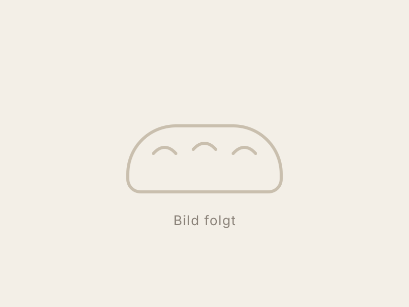
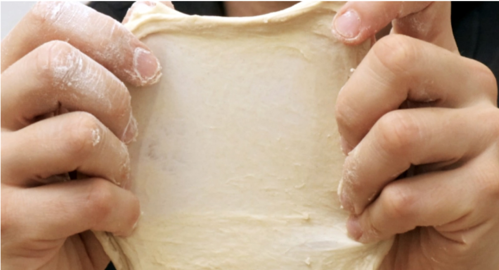
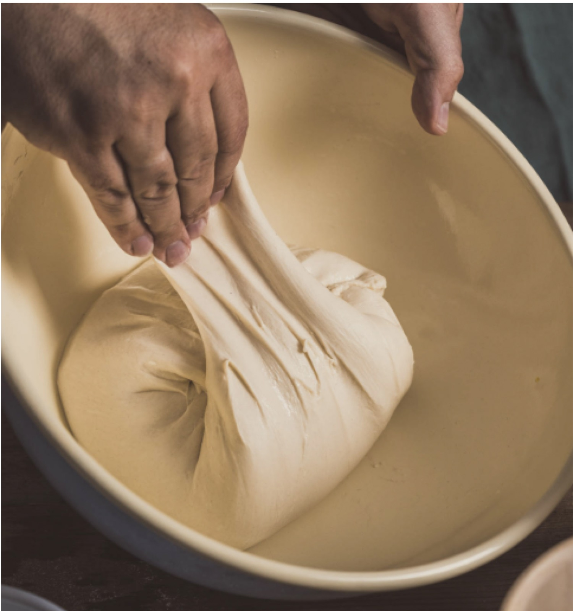

Brot braucht vor allem Zeit.
Eine Sammlung von Rezepten und Notizen zum Backen mit Sauerteig — von der ersten Fütterung bis zum Baguette aus dem eigenen Ofen.
-

Sauerteig
Was Sauerteig eigentlich ist, wie du einen ansetzt und wie du ihn am Leben hältst.
-

Grundlagen
Autolyse, Fenstertest, Stockgare, Kaltgare — die Begriffe und der immer gleiche Ablauf.
-

Baguette
Weizen oder Weizen-Dinkel, mit Bassinage und langer Kaltgare. Das Grundrezept.
Der Ablauf
Fast jedes Brot folgt demselben Muster. Was sich unterscheidet, sind die Mehle, die Wassermenge und wie lange man wartet — und gewartet wird fast die ganze Zeit.
Typischer Ablauf eines Sauerteigbrotes
Anteil an der Gesamtdauer von rund 16 Stunden
- Autolyse60 Min.
- Kneten20 Min.
- Stockgare3 Std.
- Kaltgare10 Std.
- Formen & Stückgare1,5 Std.
- Backen35 Min.